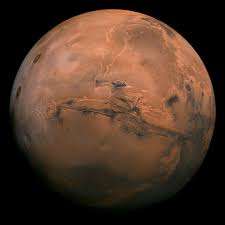
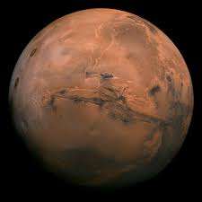
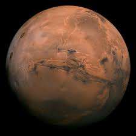
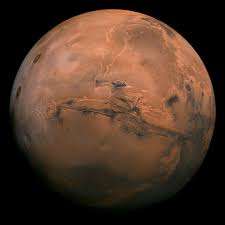

کهکشان چیست؟
کهکشان چیست؟ کهکشان همان ستارگان، گاز ها، سیارات، سیارک ها، قمر ها، گردها و غبارهایی میباشد که در فضا وجود دارد و تحت نیروی جاذبهای در یک مدار مشخصی قرار میگیرند. امروزه بیش از ۱۰۰ میلیارد کهکشان شناسایی شده است که در بسیاری از موارد با هم متفاوت اند. بسیاری از این سیارات را با چشم غیر مسلح هم میتوانید ببینید ، ولی برای دیدن عدهای دیگر از آنها باید حتما از تلسکوپ استفاده کنید. انواع کهکشان کهکشانها چهار نوع میباشند که هر کدام از آنها با توجه به شکلی که دارند نام گذاری شده اند. در ادامه چهار نوع از این کهکشانهایی که تا به امروز مشخص شده اند را برایتان بیان میکنیم.
ســتاره چیست؟
به معنای علمی، یک ستاره توپی از هیدروژن و هلیوم با جرم کافی است که میتواند همجوشی هستهای را در هسته خود حفظ کند. خورشید یک ستاره است. ستارهها میتوانند در اندازهها و رنگهای مختلفی باشند. هر جرم آسمانی بزرگ که در اثر منابع انرژی داخلی خود تابش ساطع میکند را ستاره میگویند. از دهها میلیارد تریلیون ستاره که جهان قابل مشاهده را تشکیل میدهند، تنها درصد بسیار کمی با چشم غیر مسلح قابل مشاهده هستند. بسیاری از ستارهها به صورت جفت، چند سیستمی یا خوشههای ستارهای هستند. اعضای سیستمهای ستارهای از طریق منشاء مشترک فیزیکی با یکدیگر در ارتباط هستند و تحت تاثیر نیروی گرانشی متقابل یکدیگر میباشند. معمولاً خوشههای ستارهای متشکل از گروههای ستارهای هستند. این گروهها از ستارگان مشابه تشکیل شدهاند که به عنوان یک گروه از جرم کافی برخوردار نبودهاند تا به عنوان یک سیستم واحد در کنار یکدیگر باقی بمانند.